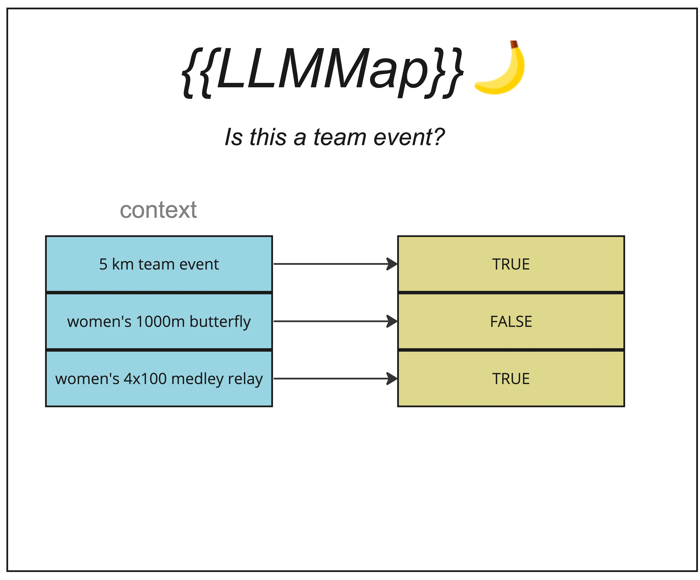

LLMMap

Description
This type of ingredient applies a function on a given column to create a new column containing the function's output.
In more formal terms, it is a unary scalar function, much like LENGTH or ABS in standard SQLite.
For example, take the following query.
SELECT merchant FROM transactions
WHERE {{LLMMap('Is this a pizza shop?', 'transactions::merchant')}} = TRUE
LLMMap is one of our builtin MapIngredients. For each of the distinct values in the "merchant" column of the "transactions" table, it will create a column containing the function output.
| merchant | Is this a pizza shop? |
|---|---|
| Domino's | 1 |
| Safeway | 0 |
| Target | 0 |
The temporary table shown above is then combined with the original "transactions" table with an INNER JOIN on the "merchant" column.
MapProgram
Bases: Program
Source code in blendsql/ingredients/builtin/map/main.py
20 21 22 23 24 25 26 27 28 29 30 31 32 33 34 35 36 37 38 39 40 41 42 43 44 45 46 47 48 49 50 51 52 53 54 55 56 57 58 59 60 61 62 63 64 65 66 67 68 69 70 71 72 73 74 75 76 77 78 79 80 81 82 83 84 85 86 87 88 89 90 91 92 93 94 95 96 97 98 99 100 101 102 103 104 105 106 107 108 109 110 111 112 113 114 115 116 117 118 119 120 121 122 123 124 125 | |
LLMMap
Bases: MapIngredient
Source code in blendsql/ingredients/builtin/map/main.py
128 129 130 131 132 133 134 135 136 137 138 139 140 141 142 143 144 145 146 147 148 149 150 151 152 153 154 155 156 157 158 159 160 161 162 163 164 165 166 167 168 169 170 171 172 173 174 175 176 177 178 179 180 181 182 183 184 185 186 187 188 189 190 191 192 193 194 195 196 197 198 199 200 201 202 203 204 205 206 207 208 209 210 211 212 213 214 215 216 217 218 219 220 221 222 223 224 225 226 227 228 229 230 231 232 233 234 235 236 237 238 239 240 241 242 243 244 245 246 247 248 249 250 251 252 253 254 255 256 257 258 259 260 261 262 263 264 265 | |
run(model, question, values, value_limit=None, example_outputs=None, output_type=None, regex=None, table_to_title=None, **kwargs)
For each value in a given column, calls a Model and retrieves the output.
Parameters:
| Name | Type | Description | Default |
|---|---|---|---|
question |
str
|
The question to map onto the values. Will also be the new column name |
required |
model |
Model
|
The Model (blender) we will make calls to. |
required |
values |
List[str]
|
The list of values to apply question to. |
required |
value_limit |
Union[int, None]
|
Optional limit on the number of values to pass to the Model |
None
|
example_outputs |
Optional[str]
|
If binary == False, this gives the Model an example of the output we expect. |
None
|
output_type |
Optional[str]
|
One of 'numeric', 'string', 'bool' |
None
|
regex |
Optional[Callable[[int], str]]
|
Optional regex to constrain answer generation. |
None
|
table_to_title |
Optional[Dict[str, str]]
|
Mapping from tablename to a title providing some more context. |
None
|
Returns:
| Type | Description |
|---|---|
Iterable[Any]
|
Iterable[Any] containing the output of the Model for each value. |
Source code in blendsql/ingredients/builtin/map/main.py
134 135 136 137 138 139 140 141 142 143 144 145 146 147 148 149 150 151 152 153 154 155 156 157 158 159 160 161 162 163 164 165 166 167 168 169 170 171 172 173 174 175 176 177 178 179 180 181 182 183 184 185 186 187 188 189 190 191 192 193 194 195 196 197 198 199 200 201 202 203 204 205 206 207 208 209 210 211 212 213 214 215 216 217 218 219 220 221 222 223 224 225 226 227 228 229 230 231 232 233 234 235 236 237 238 239 240 241 242 243 244 245 246 247 248 249 250 251 252 253 254 255 256 257 258 259 260 261 262 263 264 265 | |